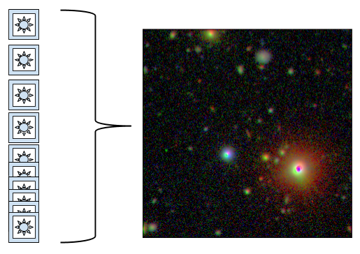
This codelab demonstrates how Google Compute Engine can help you accomplish all sorts of tasks, big or small. In the first part of the codelab, you're going to learn the basics of using Google Compute Engine. In the second part, we'll use the skills we've learned from the first part to do something amazing: compute our Universe. You'll walk through the steps of using a Virtual Machine instance to process public astronomical data to generate a viewable image.
Ask a TA support person in the Codelab Area for credentials to sign-in to a Google Cloud Project.
Projects are used to manage all of the Google Cloud Platform resources for your application.
Login using the username and password you were provided. Accept the creation of your new account and Terms of Use.
For this codelab you'll be using Google Compute Engine and Google Cloud Storage.
Click the following link to enable theses APIs for your Project.
You can use one Developers Console project to manage all of your work, or you can create multiple projects, depending on your development and collaboration needs.
To create a project, do the following:
Go to the Google Developers Console. Click Create Project, enter a name and a project ID, or accept the defaults, and click Create.
Some APIs in the Google Developers Console charge for usage, and you need to enable billing before you can start using these APIs.
To enable billing for your project, do the following:
For this codelab you'll be using Google Compute Engine and Google Cloud Storage.
Click the following link to enable theses APIs for your Project.
Google Cloud SDK contains tools and libraries that enable you to easily create and manage resources on Google Cloud Platform
→ In a terminal window run the following command to install the Google Cloud SDK:
curl https://sdk.cloud.google.com | bash
The final step to complete the configuration of the Cloud SDK is to authenticate your account.
→ Run the following command to authenticate your account with the Cloud SDK for your project:
gcloud auth login
A new browser tab will open. You'll be prompted to select an account and enter the account password. Once you've done that you'll be redirected to a new page requesting authorization to use some Cloud APIs. Click on the 'Accept' button at the bottom of the page.
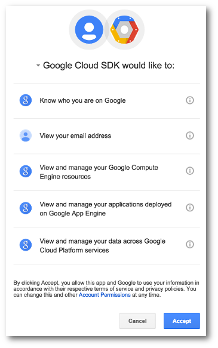
→ You should also set a default project, to avoid the need to enter your Project ID on every request. You can do this with the following command:
gcloud config set project PROJECT_ID
Your Cloud SDK client is now authorized and ready for use. You can see the newly authorized account by executing the 'gcloud auth list' command. Later in this codelab, you'll use the Cloud SDK to remotely login to your virtual machine.
Google Compute Engine is a service that allows you to start virtual machines (VMs) on Google’s infrastructure.
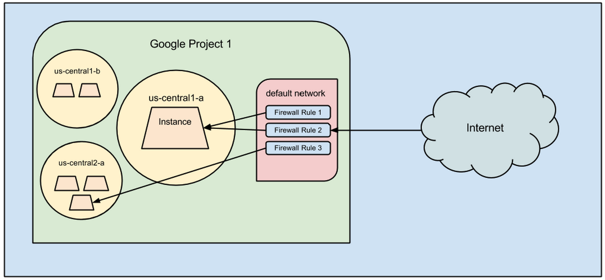
A project requires compute, network, storage, and tools. There are three different entry points to GCE, all of which talk to our API:
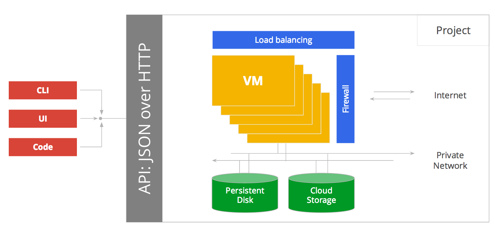
Your VMs are accessible through an assigned External IP Address, and they easily talk to each other via a local private network. Talking between VMs this way is FAST. We'll set up a default firewall for you, or you can configure your own. You can even create multiple network configurations with various firewall rules to suit your needs and security.
Your VMs can access storage on mountable Persistent Disks and in Google Cloud Storage. We'll cover this in more depth later.
In this step, you learned:
Now that you know what Compute Engine is, let's create a Compute Engine VM instance.
You are now going to create a Virtual Machine (VM) on Google Compute Engine using a custom VM Image that includes the LSST Software Stack you'll be using to process astronomy images in this code lab.
The first thing you need to do is to import the custom LSST VM Image into your Google Cloud Platform Project. You can do that with one command using the Cloud SDK's CLI.
→ Open a terminal window. Then run the following command to add a custom VM Image to your project named "codelab-image":
gcloud compute images create \ --source-uri \ http://storage.googleapis.com/codelab-2015-vm-image/1ad8c7f0540790f98eaf87801804feac985676e1.image.tar.gz \ codelab-image
Now that you've added a custom VM Image to your project you can list the VM images to confirm that you now see the "codelab-image" VM Image you just added.
→ Run the following command to list the VM Images in your project:
gcloud compute images list
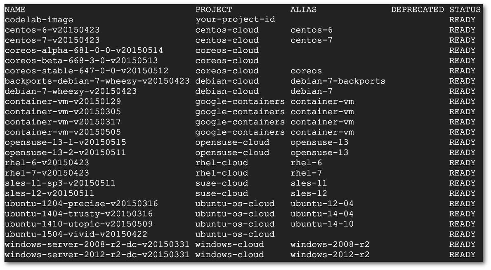
In this step you added a custom VM Image to a Google Cloud Platform Project.
Create a VM Instance along with an attached Persistent Disk.
First you're going to create a Persistent Disk, then you'll create a VM instance to attach it to.
For this codelab we’re dealing with large image files, so we first start with creating a Persistent Disk to provide some space to work in. When creating resources like Persistent Disks in Google Cloud Platform, you must specify a 'zone' which is indicates where the resources live, giving you control over where your data is stored and used. To attach a disk to an instance, both resources must reside in the same zone.
→ In a terminal window on the command-line, run the following command to create a disk named "disk1" in zone "us-central1-f":
gcloud compute disks create disk1 --size 800GB --zone us-central1-f
Now you're going to create a VM instance using the "compute instances create" command. You'll specify the VM Image "codelab-image" that we just created in the previous step. You'll also enable the Compute Engine instance to have permission to read/write to the Cloud Storage and Cloud Storage APIs using the "--scopes" flag. Finally you'll attach "disk1" (the disk you just created) to the VM Instance using the "--disk" flag.
→ On a terminal command-line run the following command to create a VM instance named "codelab-node":
gcloud compute instances create \
codelab-node \
--zone us-central1-f \
--image codelab-image \
--machine-type n1-standard-4 \
--scopes compute-rw,storage-full \
--boot-disk-device-name codelab-node \
--disk name=disk1,device-name=disk1,mode=rwIn this step you created a VM Instance with a custom VM Image along with an attached Persistent Disk. And you enabled the Compute Engine service account so that you can run code on the VM Instance that accesses the Compute Engine and Cloud Storage APIs.
Let's take our new VM Instance for a spin and use it to run some Python code to call the Compute Engine API.
Review the steps for accessing Google Compute Engine with Python
We’ll create a Python app that queries the Compute Engine API. It will:
Now you're going to create a file and add code to import some libraries to help make HTTP requests, authenticate to the GCE API, and format the HTTP response. Google Compute Engine offers client libraries in many languages. You can find a list of available client libraries here: https://developers.google.com/discovery/libraries
Your VM Instance already has the Google API Python client library installed because it's included in the LSST VM Image you created your VM with, so let’s test it out now.
→ ssh in to your VM instance by running the following command:
gcloud compute ssh codelab-node --zone us-central1-f
→ On the VM command line, type the following command to create a file named 'helloworld.py' using nano, a simple command-line file editor:
nano -m helloworld.py
→ Copy and paste the following import statements into your new file :
from googleapiclient.discovery import build from oauth2client.client import GoogleCredentials import json
In this step you:
Add code to handle authentication with the Compute Engine API.
You are now going to add code to your program to use a service account to authenticate with Compute Engine via OAuth 2.0. The Google Compute Engine API uses OAuth 2.0 for authentication, but hides its complexity with service accounts. They:
And it’s already set up! The good news is that since you specified the --scopes of "compute-rw storage-full" when you ran the "compute instances create" command to create your VM Instance, it already has a service account setup with the “scopes of access” you’ll need to access the Compute Engine and Cloud Storage services.
→ In your helloworld.py file, add the following lines of code:
credentials = GoogleCredentials.get_application_default()
service = build('compute', 'v1', credentials=credentials)That’s it for authentication!
Add the code to make an API request.
You are now going to add code to your Python program to make a 'list instances' request to the Compute Engine API.
→ 1. In your helloworld.py file, add the following lines of code.
response = service.instances().list(project='PROJECT_ID', zone='us-central1-f').execute() print json.dumps(response, sort_keys=True, indent=4)
→ 2. Close the file in the nano editor with the following key combinations:
→ 3. Run it from the command line:
python helloworld.py
→ 4. Confirm the output looks good: You should see a list of Compute Engine instances.
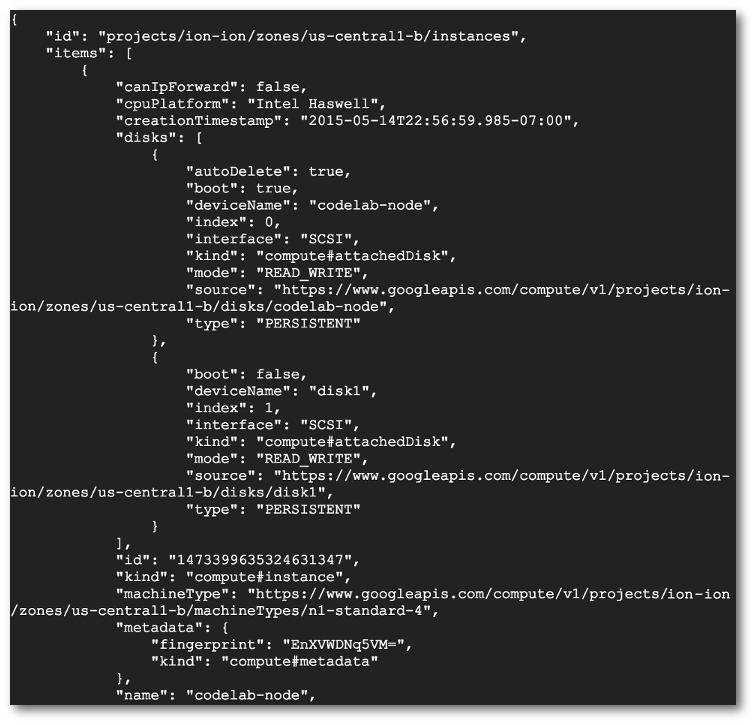
In this step you added code to your Python program to list all VM instances in a specific GCE Zone.
Use your new knowledge and experience with Compute Engine to process astronomy images and compute the cosmos!
Examine the Universe by adding up everything we know about one part of the sky.
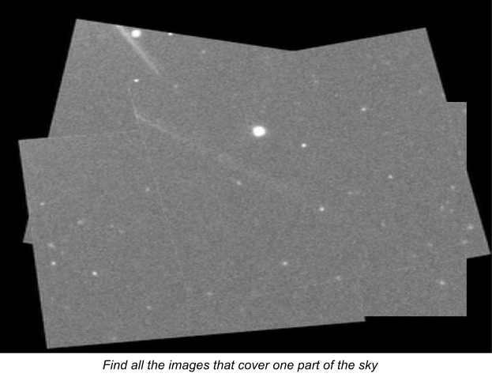
One image of sky is interesting but if you combine many images that were taken over the time span of years, new previously unseen details are revealed.
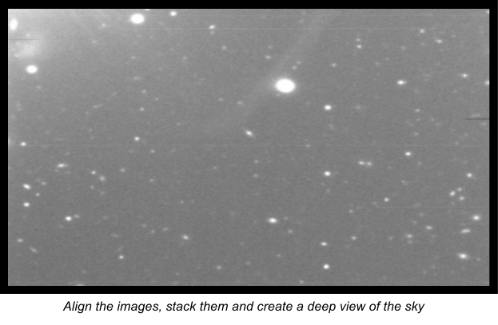
Here's an example of single input image next to an example of the type of final image that results from stacking many images taken over time.
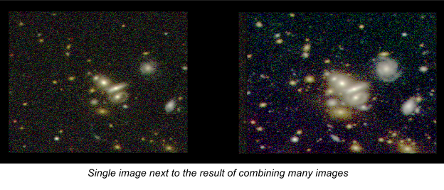
Now you will be assigned a piece of the sky to process with Compute Engine.
You might be assigned a piece of the sky that's been previously determined as one of the more interesting places in the Universe or you could be assigned an area that's yet to be explored - it's up to you to find the most interesting object in the sky!
You saw examples of how new details are visible when images of the sky taken over time are combined. You'll be assigned a part of the sky to perform this process yourself with Compute Engine.
Review the architecture of how you'll get all the images for a piece of the sky and how you'll combine them into one final image.
Review the components and steps required to process astronomy images.
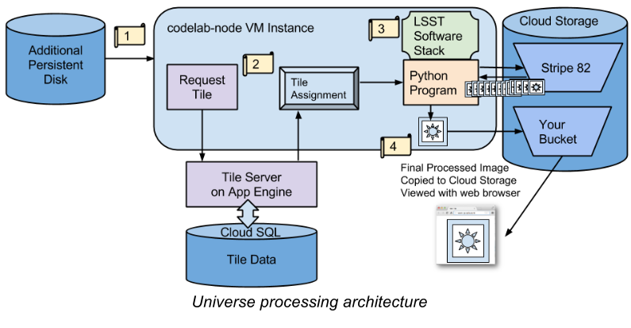
From here on out, we’re dealing with real image files that require lots of space. Let’s mount “disk1”, the blank Persistent Disk we created in Step 4 when we created our “codelab-node” VM instance.
→ 1. Create a folder to mount the disk to. Run the command:
sudo mkdir /mnt/disk1
→ 2. Determine the Disk ID in order to format and mount it. Run the command:
ls -l /dev/disk/by-id/*
→ 3. Format and mount the drive to the newly created folder. Run the command:
sudo /usr/share/google/safe_format_and_mount -m "mkfs.ext4 -F" \ /dev/disk/by-id/scsi-0Google_PersistentDisk_disk1 /mnt/disk1
→ 4. Open up access to the folder. Run the command:
sudo chmod 777 /mnt/disk1
→ 5. Confirm that the additional disk space is now available. Run the command:
sudo df -h --total
→ 6. Change directory to use the new disk space. Run the command:
cd /mnt/disk1
You formatted and mounted the additional Persistent Disk on to your VM instance. You also confirmed that you now have the space available to start processing images.
Get assigned a part of the Universe to process.
You are now going to request a "tile" which is a piece of the sky that you can process with the LSST Software Stack on your VM Instance.
A tile consist of all the available images for a given coordinate in space covering a range of times from a catalog of astronomical photography called the Stripe 82 database collected by the Sloan Digital Sky Survey - starting in 1998 when the first image was taken and continuing up until 2007 when the last image was taken. Think of a tile as a stack of images (sometimes 100s) that you're going to stack, align and then combine into one final composite image. A copy of all of the Stripe 82 images (10 TB in total) is stored in Google Cloud Storage which provides fast access to the images needed to process a tile.
For this code lab, we've made it easy and created a Tile Server App running on App Engine that does the following for you:
→ Run the following command to get a tile assignment:
curl http://compute-codelab.appspot.com/get-tile > tile-assignment.json
→ Run the following command to confirm that you've got a valid tile assignment:
cat tile-assignment.json
→ To see the same information using JSON Pretty Print try running this command:
cat tile-assignment.json | python -mjson.tool
You requested a tile assignment from the Tile Server and you confirmed that you were assigned a valid tile.
Initialize the LSST Software Stack in order to process your tile assignment.
Initialize the LSST Software Stack for astronomical image processing and download the Python processing script and other input files.
→ 1. Change your present directory to the location of LSST Software Stack. Run the following command:
cd /opt/lsst/
→ 2. Initialize LSST software for usage. Run the following command:
source loadLSST.bash
→ 3. Setup the LSST afw Python library. Run the following command:
setup afw
→ 4. Download makeCoaddCloud.py provided by University of Washington and other input files from Google Cloud Storage to the mounted Persistent Disk. Run the following command:
gsutil cp gs://codelab-files/* /mnt/disk1/
→ 5. Change directory back to mounted Persistent Disk
cd /mnt/disk1
You initialized the LSST Software Stack on your VM Instance and downloaded the Python file - makeCoaddCloud.py - that you'll be using next to interact with the LSST Software Stack to process your assigned tile.
Process the tile and generate a final composite image.
Start the image processing. Then save the final resulting image to Google Cloud Storage in order to view it in a browser.
→ 1. Execute the makeCoaddCloud.py script to process the JSON in our tile assignment and generate an image. Run the following command:
python makeCoaddCloud.py tile-assignment.json --maxImages=20
→ 2. Find out the image filename for your newly created image by listing the contents of your current directory. Run the following command:
ls -l
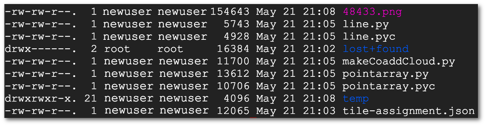
→ 3. Create a Google Cloud Storage bucket in your project to host your image for viewing in a web browser. You'll use the Cloud Storage command-line utility called 'gsutil' to accomplish this task, which is included in the Cloud SDK.
Run the following command to create a Cloud Storage bucket:
gsutil mb gs://viewing-images-PROJECT_ID
→ 4. Copy the composite image file you just created to a Google Cloud Storage bucket in your project. Run the following command:
gsutil cp <image-filename> gs://viewing-images-PROJECT_ID
→ 5. Make the image public. Run the following command:
gsutil acl set public-read gs://viewing-images-PROJECT_ID/<image-filename>
→ 6. View the image in a web browser. Open a browser and go to the following URL:
http://storage.googleapis.com/viewing-images-PROJECT_ID/<image-filename>
You used the makeCoaddCloud.py Python script to interact with the LSST Software Stack in order to process a tile assignment into a final composite image. Then you copied the composite image to Cloud Storage. Finally you viewed the image you created in a browser.
Hooray! You used Compute Engine to generate a composite image from a large stack of (SDSS) images stored in Cloud Storage, and computed the cosmos. Nice Work!
We hope this introduction to Compute Engine has demonstrated its flexibility, power, and usefulness. To learn more, take a look at our resources below: